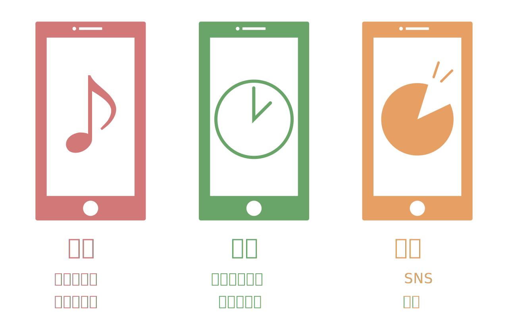

ー電車内でスマホを使っている人がいるのは当たり前の世の中ですよね。そのことについてどうお考えですか？ー
「私が小学生の頃は新聞を読む人や、本、ゲームを持って電車内を過ごしている人が多いイメージでした。今は半数を超える人がスマホを使って電車内を過ごしてますよね。スマホでできることは多いですから。」
スマートフォンの普及は我々にどんな影響をもたらしただろうか？
初代のスマホは「意識高めの携帯電話」というイキってるイメージ故、日本にはあまり受け入れられないものだった。それが新しいモノ好きに渡り、流行り物好きに渡り、みんなが持っているからと持ち始め、今や全体の8割がスマホを持っている。スマホ世代である今、これからの社会はどう変わっていくのだろうか。
縄文時代にインターネットができたら「いらない」。情報社会の今だから「いる」。
ー電車内でスマホを使っている人がいるのは当たり前の世の中ですよね。そのことについてどうお考えですか？ー
「私が小学生の頃は新聞を読む人や、本、ゲームを持って電車内を過ごしている人が多いイメージでした。今は半数を超える人がスマホを使って電車内を過ごしてますよね。スマホでできることは多いですから。」
ー今回、電車内でのオフラインということでしたが、何をして過ごされていたのでしょうか？ー
「本を読んで過ごしていました。何も問題ないだろうと思っていましたが、難しい言葉や、気になる事柄をすぐにインターネットを使って調べることができず、何度ももどかしい気持ちになりました。」
ーインターネットは調べものにも優れていますもんね。ー
「そうですね。今回の体験でインターネットがいかにできることが多いか。我々の生活に溶け込んでいるかに気づかされました。私の考えでは、おおまかに３つのできることに分かれます。」

「まず、Youtube等の動画サイトが見れることや、音楽を聞くことができる娯楽機能。電子書籍やゲームもここに入ります。若者はこの機能を使う人が多いそうです。
次に、地図を見たり、電車の乗り換え案内を見たりすることができる便利機能。これらの機能は生活の中でかなり助けられているのではないでしょうか。
最後に、SNS等のコミュニケーションができる交流機能。遠くにいる人でも気軽に連絡を取り合える時代になりましたよね。福岡に住む私の祖母も、テレビ通話ができることからスマホを持つようになりました。」
ー今回の体験や考えを通して、インターネットはどうなっていくと思いますか？ー
「私達が情報を得たいと思う限り、できることはさらに増え、まだまだ伸び続けると思います。たくさんの情報が流れているから情報社会であると思われがちですが、私達が情報を得たいとハングリーな状態だから情報社会が出来上がったのだと思います。そのハングリー状態から解放されるまではインターネットはさらに発達していくでしょう。おかしな話をしますが、もし縄文時代の人にインターネットを進めても「いらない。」と返されるでしょう。その人達はお腹ハングリーの解放を一番に考えているのですから(笑)。情報社会である今だから、インターネットは必要とされたのです。」
川上 紗耶かわかみ さや
女子美術大学短期大学部造形学科デザインコース２年
情報と人をデザインでつなぐ、webクリエイターを目指す。日本のクリエイティブ力を上げるため、自分にはセンスがないと決めつけ、離れていく人々を引き止めたい。
オフラインと人とアート
これからの情報社会
思えば、スマホを手にした５年前から紙の辞書を使っていない。小さな端末でできることが増え、それまで使っていたものが減っていく今。まるで、もう一つの空間を作っているかのようだと思った。私が小学生の頃に流行った、自分だけのアバターを持ち、仮想空間でコミュニティをつくるチャットのようなネットサービスや、今現在流行っているSNSも、現実世界にはない、新たなコミュニティの輪を広げている。そこには、現実のような縛られるものはない。現実世界だけでの経済発展に苦戦し始めた今、インターネット世界を作ることはこれからの社会に必要である。